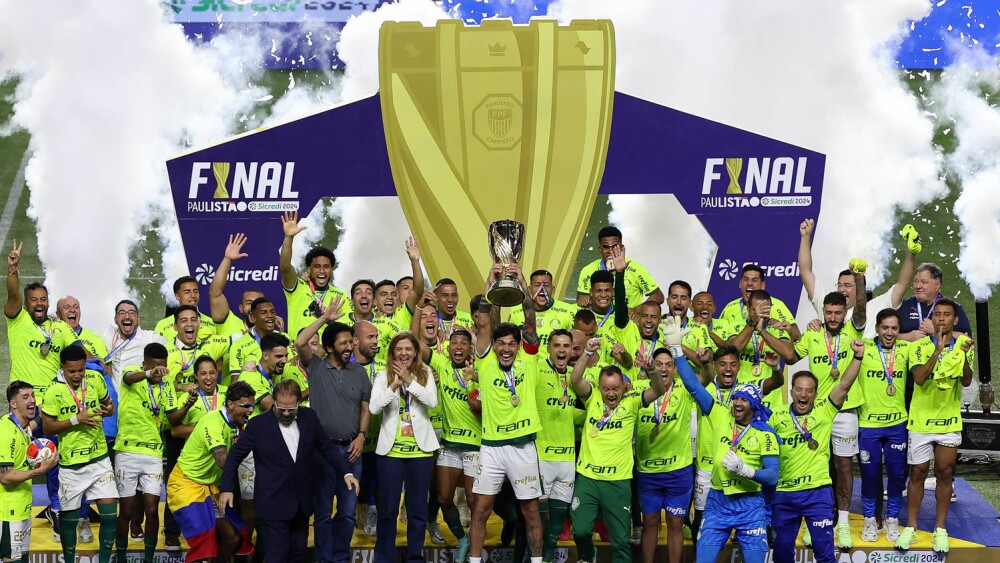
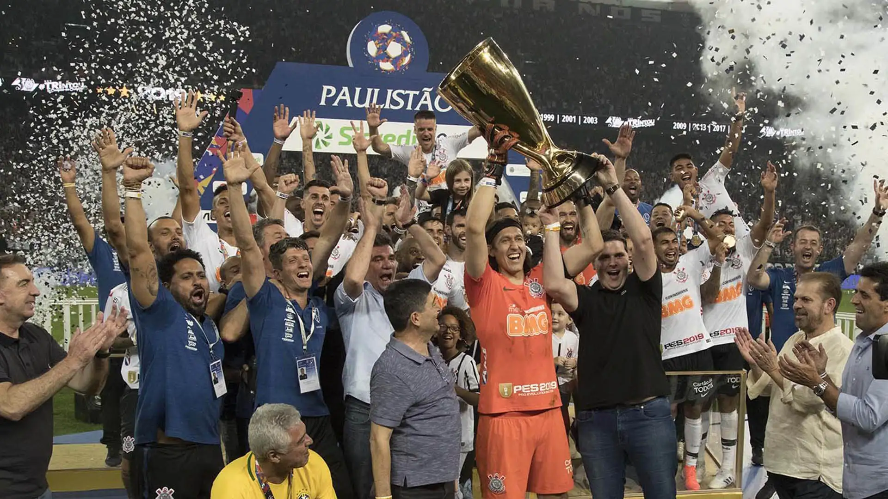
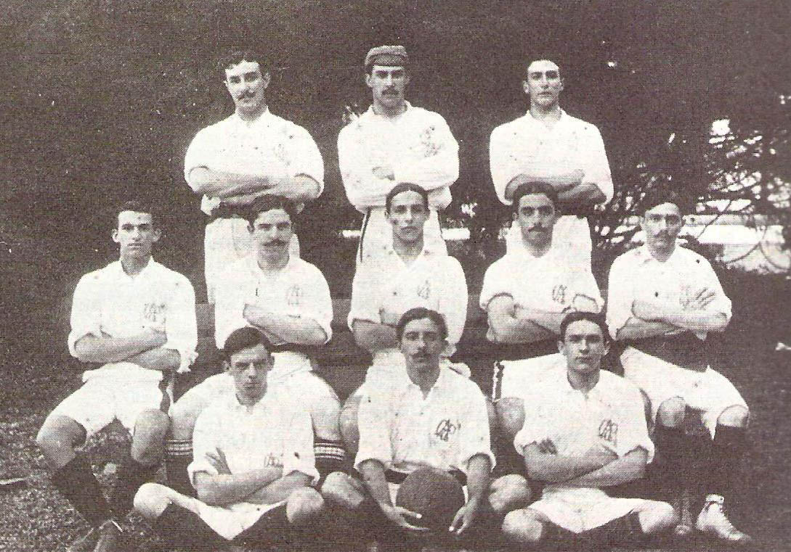
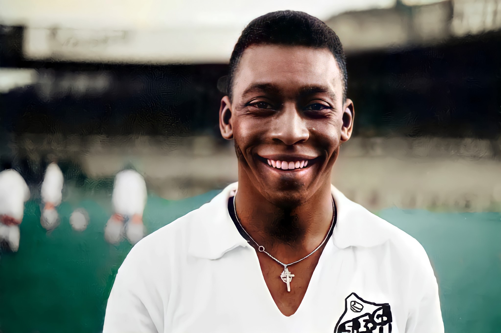

Campeonato Paulista Masculino
Saiba mais sobre a História do Campeonato Paulista Masculino
O Campeonato Paulista de Futebol, mais conhecido como Campeonato Paulista ou ainda Paulistão, é a competição profissional desse esporte no estado de São Paulo. Organizada pela Federação Paulista de Futebol, desde 1941, é a liga de futebol mais antiga do Brasil, sendo realizada ininterruptamente desde 1902. Teve como primeiro campeão o São Paulo Athletic. Seu atual campeão é o Palmeiras, vencedor da edição de 2024, quando conquistou seu vigésimo sexto título na competição.
De acordo com a contagem da Federação Paulista de Futebol, os maiores campeões da competição são: o Corinthians, com 30 conquistas; o Palmeiras, com 26 títulos; e São Paulo e Santos, tendo conquistado 22 vezes cada. Além dos títulos contabilizados pela Federação Paulista, o Palmeiras tem mais dois títulos extras do Campeonato Paulista e o São Paulo mais um do Supercampeonato Paulista. A rivalidade entre estes quatro times, que figuram no grupo das maiores equipes do Brasil, está marcada na história desta competição. Outros doze clubes já venceram a principal divisão do futebol paulista ao longo de sua história, que contou com a participação de 102 clubes diferentes.
Atualmente, o torneio da Primeira Divisão é disputado por dezesseis equipes e normalmente realizado entre janeiro e meados de abril da temporada do futebol brasileiro. A nova fórmula de disputa (com dezesseis clubes divididos em quatro grupos) entrou em vigor em 2017. Charles Miller foi o responsável pela criação do primeiro torneio de futebol no Brasil, no estado de São Paulo. Charles introduziu as regras do futebol em seu país após seu retorno da Inglaterra, onde ele realizada seus estudos e descobrira o esporte. Em 14 de dezembro de 1901 é fundada a Liga Paulista de Foot-Ball, acrônimo LPF, sendo composta inicialmente por cinco equipes: São Paulo Athletic, Internacional, Mackenzie, Germânia e Paulistano. Entre abril e outubro de 1902 estas equipes competiram na primeira edição do torneio, que teve o São Paulo Athletic Club como campeão e o próprio Charles como artilheiro. Diferente da Argentina e do Uruguai, o futebol era restrito às elites em seus primeiros momentos no Brasil.
Nos anos seguintes a popularidade do futebol foi crescendo. O Paulistano, uma equipe composta pelos filhos das famílias mais ricas de São Paulo, tornou-se a equipe mais forte do estado. Contudo, a base da popularidade do esporte começou a mudar após o Corinthian, uma equipe amadora de Londres, realizar uma brilhante turnê em São Paulo e no Rio de Janeiro. Eles venceram facilmente os melhores times brasileiros da época e causaram uma impressão bastante favorável nos fãs mais jovens do esporte. Pouquíssimo tempo depois, um grupo de trabalhadores inspirou-se neles e fundou o primeiro time popular da cidade: o Corinthians.
A LPF encerrou suas atividades em 1917. Até 1926, a APEA permaneceu sendo a única liga em São Paulo. Equipes fortes, grandes multidões e jogadores como Neco do Corinthians e Arthur Friedenreich do Paulistano contribuíram para a febre futebolística que converteu o futebol, de "diversão de estrangeiro", para o esporte mais popular no Brasil. Debates cercaram a questão de que se o futebol deveria ser profissionalizado ou se deveria permanecer um simples empreendimento amador. O Paulistano, recordista de títulos na época, recusou-se a tornar-se profissional e criou em 1925 a Liga dos Amadores de Futebol, acrônimo LAF. A competição entre as duas ligas alimentou a expansão do número de times e clubes do interior do estado começaram então a aderi-las.
O Paulistão de 1933 entrou para a história do futebol brasileiro por ter sido o primeiro campeonato estadual profissional e a segunda competição da era do profissionalismo do futebol no Brasil, sendo a primeira o Torneio Rio-São Paulo de 1933. O primeiro jogo de futebol profissional do Brasil foi um amistoso realizado na Vila Belmiro, em 12 de março, com vitória do São Paulo por 5 a 1 sobre o Santos. E Arthur Friedenreich, ironicamente um contrário à profissionalização, fez o primeiro gol "remunerado" da história do futebol do País.
O futebol cresceu dentro do estado e a segunda divisão foi criada em 1948, permitindo que equipes do interior participassem da competição principal. O XV de Novembro da cidade de Piracicaba foi a primeira equipe promovida à elite.
Pelé é o maior artilheiro da história do Campeonato Paulista, com 37 hat-tricks, 58 gols em uma única edição e 255 gols em 410 partidas. O Rei foi o artilheiro do torneio 11 vezes, sendo nove consecutivas entre 1957 e 1965.
